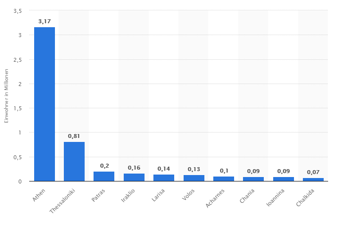

In Griechenland leben knapp über 10,5 Millionen Menschen und davon cica 3,8 Millionen Menschen in Athen. Daher liegt die Bevölkerungsdichte bei 84,6 Einwohner pro km2
Des weiterem hat eine Frau im Durchschnitt 1,3 Kinder,
wo bei die Lebenserwartungen circa bei 80,7 Jahren liegt.
Die griechische Kultur gilt allerdings auch weltweit als eine der Ältesten.
Die Metropolen Griechenlands:
